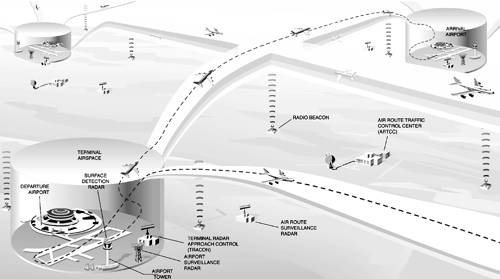
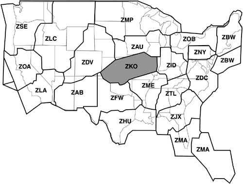

| [ Team LiB ] |
|
Chapter 6. Air Traffic Control: A Case Study in Designing for High Availability
Air traffic control (ATC) is among the most demanding of all software applications. It is hard real time, meaning that timing deadlines must be met absolutely; it is safety critical, meaning that human lives may be lost if the system does not perform correctly; and it is highly distributed, requiring dozens of controllers to work cooperatively to guide aircraft through the airways system. In the United States, whose skies are filled with more commercial, private, and military aircraft than any other part of the world, ATC is an area of intense public scrutiny. Aside from the obvious safety issues, building and maintaining a safe, reliable airways system requires enormous expenditures of public money. ATC is a multibillion-dollar undertaking. This chapter is a case study of one part of a once-planned, next-generation ATC system for the United States. We will see how its architecture—in particular, a set of carefully chosen views (as in Chapter 2) coupled with the right tactics (as in Chapter 5)—held the key to achieving its demanding and wide-ranging requirements. Although this system was never put into operation because of budgetary constraints, it was implemented and demonstrated that the system could meet its quality goals. In the United States, air traffic is controlled by the Federal Aviation Administration (FAA), a government agency responsible for aviation safety in general. The FAA is the customer for the system we will describe. As a flight progresses from its departure airport to its arrival airport, it deals with several ATC entities that guide it safely through each portion of the airways (and ground facilities) it is using. Ground control coordinates the movement of aircraft on the ground at an airport. Towers control aircraft flying within an airport's terminal control area, a cylindrical section of airspace centered at an airport. Finally, en route centers divide the skies over the country into 22 large sections of responsibility. Consider an airline flight from Key West, Florida, to Washington, D.C.'s Dulles Airport. The crew of the flight will communicate with Key West ground control to taxi from the gate to the end of the runway, Key West tower during takeoff and climb-out, and then Miami Center (the en route center whose airspace covers Key West) once it leaves the Key West terminal control area. From there the flight will be handed off to Jacksonville Center, Atlanta Center, and so forth, until it enters the airspace controlled by Washington Center. From Washington Center, it will be handed off to the Dulles tower, which will guide its approach and landing. When it leaves the runway, the flight will communicate with Dulles ground control for its taxi to the gate. This is an oversimplified view of ATC in the United States, but it suffices for our case study. Figure 6.1 shows the hand-off process, and Figure 6.2 shows the 22 en route centers. Figure 6.1. Flying from point A to point B in the U.S. air traffic control system.Courtesy of Ian Worpole/Scientific American, 1994.  Figure 6.2. En route centers in the United States The system we will study is called the Initial Sector Suite System (ISSS), which was intended to be an upgraded hardware and software system for the 22 en route centers in the United States. It was part of a much larger government procurement that would have, in stages, installed similar upgraded systems in the towers and ground control facilities, as well as the transoceanic ATC facilities. The fact that ISSS was to be procured as only one of a set of strongly related systems had a profound effect on its architecture. In particular, there was great incentive to adopt common designs and elements where possible because the ISSS developer also intended to bid on the other systems. After all, these different systems (en route center, tower, ground control) share many elements: interfaces to radio systems, interfaces to flight plan databases, interfaces to each other, interpreting radar data, requirements for reliability and performance, and so on. Thus, the ISSS design was influenced broadly by the requirements for all of the upgraded systems, not just the ISSS-specific ones. The complete set of upgraded systems was to be called the Advanced Automation System (AAS). Ultimately, the AAS program was canceled in favor of a less ambitious, less costly, more staged upgrade plan. Nevertheless, ISSS is still an illuminating case study because, when the program was canceled, the design and most of the code were actually already completed. Furthermore, the architecture of the system (as well as most other aspects) was studied by an independent audit team and found to be well suited to its requirements. Finally, the system that was deployed instead of ISSS borrowed heavily from the ISSS architecture. For these reasons, we will present the ISSS architecture as an actual solution to an extremely difficult problem. |
| [ Team LiB ] |
|